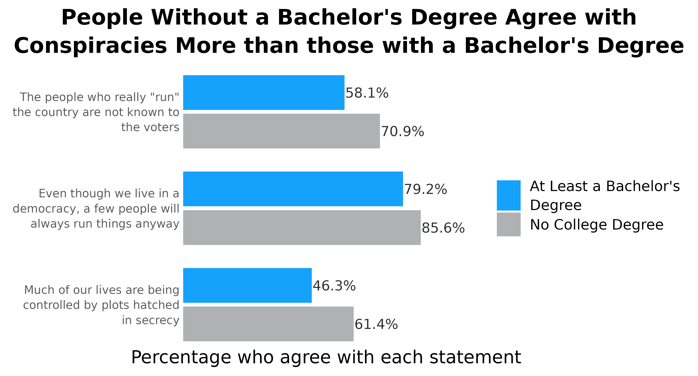

How to Use the `adl_bar_plots` function
Source:vignettes/how_to_use_adl_bar_plot.Rmd
how_to_use_adl_bar_plot.Rmd
library(adlgraphs)
library(dplyr)
library(ggplot2)
library(stringr)
library(forcats)
library(haven)
library(labelled)
library(glue)
library(ggtext)At CAR, our data visualization often consists of creating bar plots. These can be stacked bar plots or dodged/grouped bar plots, horizontally or vertically oriented, and with or without confidence intervals. While bar plots may not be the flashiest of graphs, they are really valuable due to the ease at which they convey information, the amount of information they can convey, and the fact that most people know how to read them.
This tutorial is comprised of two parts and will likely be updated periodically over time:
The first part consists of a data visualization and style guide as it relates to creating bar plots so that they are consistent with CAR’s style.
The second part demonstrates how to use various functions from the
adlgraphspackage to make creating bar plots easier.
CAR’s bar plot data visualization and style guide
Some general rules that apply to all bar plots:
The title ought to be no more than two lines and ought to be the main takeaway of the plot.
Subtitle can convey additional information not available in the rest of the plot. For example, it can help clarify what it is the plot is demonstrating.
Use exact question labeling whenever possible. This is most often used in the axis labels but can be in title.
The data point the bar is demonstrating should be directly labelled either inside or outside the bar.
Don’t include grid lines. They are unnecessary since the labels are already labelled.
Don’t label axes if not necessary.
Frequency plots
Simple bar plots (no groups)
Now let’s look at these in action. Below is a simple vertical frequency plot. While this doesn’t have a subtitle, the rest of what is written above still applies. Each bar is directly labelled with the percentage.
There aren’t any grid lines since the bars are labelled directly
The plot title contains the main takeaway (or a main takeaway)
The y-axis title is not labeled since the columns are already labeled with data and % symbols.
The x-axis title is the exact question wording.
Each column is directly labeled outside the bar with the data value it represents and the % symbol.
Lastly, the order of the bars is not reordered by percentage since the values of the x-axis already have an inherent order. Furthermore, “Strongly disagree” appears on the far left and “Strongly agree” appears on the far right. (Note: If the values of the x-axis were to not have a specific order to them, then we would reorder them by percentage.)

Now let’s take a look at a relatively simple horizontal bar plot. The same principles laid out previously apply here as well, however, there are some differences. For example, take the plot below. Here we are looking at the percentage of people from each education level who agree with a specific statement. Normally we would show this as a stacked plot with all response options, but occasionally we want something simpler. While this graph could be vertical, it is easier to read if done horizontally. Namely, people don’t have to turn their head to read the axes. Some notes:
When frequency plots are horizontal, the percentage labels go outside the columns to the right.
Again, the x-axis is not reordered because educational levels have an inherent order to them. However, if this were something without an inherent order, like race/ethnicity, we would reorder the columns based on the percentage so the top bar is highest and the bottom bar is lowest.
The y-axis does not have a title because it is obvious we are looking at education levels. This concept applies to other demographic groups. Only include titles if necessary.
While not super necessary, this graph has wrapped the y-axis labels (there are line breaks), this makes the graph look more symmetrical and keeps the x-axis title more centered. If adding line breaks try to keep them to three maximum whenever possible.
The x-axis is title is added to clarify what it is we are looking it.

Dodged frequency plots (multiple groups)
We don’t use dodged bar plots too frequently, but it is important to understand what to do if we do use them. In this example, we’ll look at how people with and withou a college degree differ in their support for various statements about conspiracy theories.
When using dodged plots try to avoid using more than four groups. Any more than four groups and it begins to become a bit unclear what it is we are looking at.
With horizontally bar plots, the legend should appear to the right of the columns and in the order of the columns, as is visible in the plot. However, where possible, add color to the title to indicate the groups and avoid legend.
Sometimes, it is possible to add color to the text in the title when referring to the groups in the image. This should be done instead of using a legend as it reduces the clutter in the image. See how much cleaner the example below is?